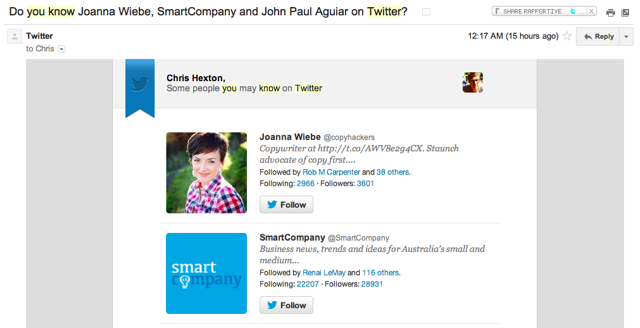

Most businesses send the same sorts of emails: some reach out right after you sign up, only to forget about you days later. Others will send you the occasional update when they are are launching a new product and the rest might send you a few tidbits month-to-month.
Does this sound familiar to you? There’s no doubt you’ve seen these sorts of campaigns time-and-again.
If you’re looking for ways to increase your clicks and conversions then you have to stand out: you need to think outside the box and make the most of every opportunity. Success is in the details.
Segmentation gives you the power to send more dynamic, targeted emails. Quality segmentation strategies help you maximise engagement as your customers receive emails that are more relevant. Greater relevance leads to higher interaction rates.
The fact is, most email marketers are well aware of of the impact segmentation can have on their bottom line: according to the MarketingSherpa’s 2012 Email Marketing Benchmark Report, 52% of marketers say they know they need to improve email database segmentation.
So, if you’re a marketer looking for inspiration, here are three ways you can segment your customers and email campaigns for greater clicks and conversions.
1. Use well-known dates as triggers
It might seem obvious but popular calendar dates are a great trigger for email campaigns. Creating copy and creatives can be challenging but, due to the ubiquity of events like Christmas, Father’s Day or Mother’s Day, these emails are nearly always relevant. Take this campaign from Kiva:
Kiva harnesses Mother’s Day to introduce customers to a Kiva product (the gift card) that they may never have heard of. In essence this campaign is a ‘cross-sell’ that uses Mother’s Day as the basis for the campaign. Another example of a good campaign driven by a particular date is this campaign from Hipmunk:
This is a great example that uses summer as the key event and it serves as a reminder that you should harness every opportunity you can to send your customers something relevant. In this instnace the email is quality because it’s useful: people tend to go on holidays in summer and finding a great deal is often at the top of customers’ minds.
When using public dates and holidays make sure you put together an editorial calendar and segment on key customer attributes. ‘Location’ is an obvious one. Dates such as Father’s Day are not the same in every country and summer obviously happens at different times, so bear this in mind. Using public dates is an easy way to get started with segmenting your campaigns and can give your email editorial calendar a great base. It’s a lightweight way to begin building up a series of lifecycle emails that aim to increase the lifetime value of your customers and keep them coming back. After all, never forget that it costs more to acquire a new customer than it does to maintain a current one.
You can go one than these general dates further and use individual customers’ birthdays or other customer-centric dates that you collect from sign-up forms or customer profiles. This might sound corny but it is a good way to ease into truly one-to-one email marketing. If you’re not into it, don’t do birthday emails and instead be creative. For example, a jewellery store might track customers that select ‘This purchase is a gift’ and ask them if it was for an anniversary. Recording the date would allow this retailer to email individual customers with ‘gift reminders’ in the future. This sort of campaign starts to become helpful for customers and that is when the magic happens.
Think outside the box!
2. Track your customers’ online behaviour and actually use it
Keeping track of past purchases, what features a customer has or has not used, keeping track of their initial landing page and understanding the products a customer views are all basic examples of behavior you can track to provide more targeted emails.
When a cart is abandoned or multiple visits are made to a particular page you can use this information to send emails to customers at an individual level and ensure each email is truly relevant. This is really segmentation in it’s purest form as your ‘segments’ no longer contain tens, hundreds or thousands of users but one!
Many businesses spend a lot of time using customer behaviour to influence on-site UI changes or the content that a customer sees but don’t forget that you can use it to tailor your email marketing campaigns as well.
The best examples come from the likes of Amazon, who do this tremendously well:
Amazon use behaviour to influence both the on-site and off-site experiences and collect information about every user in really subtle ways. They are consistently pushing this customisation further as their product offerings grow – they can do this cross-device, particularly with their Kindles, iPhone apps and strong focus on mobile.
Another example of their great campaigns is this one:
This one was originally mentioned on DBS.
Both campaigns are tremendous examples of the power of tracking which products yours customers’ view and purchase and how to put this data to work in order to personalise each and every email.
Another example from a different category all together is this great email from Travelocity (originally mentioned on Clickz):
One of the world’s largest travel search sites, this campaign targets customers that have recently searched for flights to a location and for whom there is now a discount offer. Tracking individual customer actions allows Travelocity to increase conversion rates thanks to tightly-targeted deals. Savvy.
3. Use social interests and interactions
Perhaps the holy grail, emailing customers based on their interactions with other users is extremely effective. At the top end of town companies like Facebook and Twitter have the ability to use their direct social data to drive these sorts of campaigns. Here’s an example from Twitter that you are probably familiar with:

Here’s a similar example from social-shopping site Svpply:
Thanks to the fact that ‘social’ is now ubiquitous and platforms are opening up, external companies (i.e. non-social networks) are beginning to use the same social data to drive engagement, retention and acquisition campaigns. Gaming and other apps built on top of the Facebook platform are common users of social data when it comes to email but even typical, offline, businesses can make the most of social networks to capture new customers and email subscribers. This savvy campaign by RAPP UK for the Cancer Research UK’s Run for Life uses Facebook and Twitter to create a ‘viral loop’:
…customers that shared via FB and Twitter saw this posted to their wall:
These campaigns are awesome but the simplest way to start is by observing which products are popular on your Facebook, Pinterest or Twitter profiles. Who is sharing your products, services or business with their friends and on which platform? At the very least you can use this information to personalize your newsletters by picking products that you already know are popular.
Going one-step further you can also observe which groups of customers are sharing which products and break your newsletters up. You can also flavour your emails based on the particular platform. For example you could track customers that click ‘Pin’ on a particular product in your store (using Javascript) and include them in a “Pin It to Win It†contest, as you know they have a Pinterest profile.
Likewise you can track customers that like your page on facebook (via your website or perhaps clicking a link in one of your email marketing campaigns) and follow up with a link to a Facebook offer or a discount if they share a product or paritcular piece of content on Facebook.
Start segmenting!
Segmenting an email database is all about by providing your customers with targeted, relevant and valuable information that will lead them through the conversion funnel.
If a customer hasn’t bought anything in some time, has a birthday just around the bend, or shows a great deal of interest in a product but can’t commit, segment your list and react accordingly.
Emails that are targeted and relevant to your audience will lead to an increase in clicks and sales.
What segmentation strategies have you already got in place? What strategies have you seen that you thought were super effective?